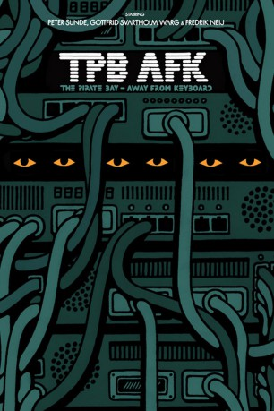

#1515 TPB AFK: The Pirate Bay Away from Keyboard
 gesehen am 24.10.2015
gesehen am 24.10.2015
 
 IMDB-Wertung: 7.6 / 10
IMDB-Wertung: 7.6 / 10  Metascore: 0
Metascore: 0 
Die Dokumentation widmet sich den Gründern und Protagonisten jener BitTorrent-Plattform, die bei Film- und Musikindustrie Angst und Schrecken verbreitet hat und bis heute als Inbegriff für Online-Piraterie gilt. TPB AFK gibt einen Blick hinter die Kulissen des Torrent-Trackers und zeigt vor allem die Geschehnisse der zahlreichen Prozesse gegen die Gründer von The Pirate Bay. Dabei gibt es auch viel Privates zu sehen, denn im Gegensatz zum öffentlich gezeichneten Bild kamen die Gründer Gottfrid Svartholm, Fredrik Neij und Peter Sunde nicht immer gut miteinander klar.
Jahr: 2013
Dauer: 85 Minuten
FSK:
Land: Schweden Studio: NHK BS1Tonspuren:
Untertitel:
Auflösung: 720p (1280x720) Größe: 2119 MB
Genre: Dokumentation
Regisseur: Simon Klose
Drehbuch:
Soundtrack: Ola Fløttum
Darsteller:
- Gottfrid Svartholm als Himself
- Peter Sunde als Himself
- Fredrik Neij als Himself
- Anna als Herself - Video Blogger
- Fanny als Herself - Gottfrid's Friend
- Carl Lundström als Himself - Fredrik's former employer, the 4th defendant
- Jonas Nilsson als Himself - Fredrik's Lawyer
- Tomas Norström als Himself - District Court Judge
- Henrik Pontén als Himself - The Anti-Piracy Bureau
- Rasmus als Himself - The Pirate Bureau
- André Rickardsson als Himself - Ex-SAPO / Swedish Security Service agent & IT expert
- Håkan Roswall als Himself - State Prosecutor
- Ola Salomonsson als Himself - Gottfrid's Lawyer
- Per E. Samuelsson als Himself - Lundström's Lawyer
- Per Sundin als Himself - CEO, Universal Music Sweden
- Tobias als Himself - The Pirate Bureau
- Monique Wadstead als Herself - Hollywood's Lawyer
Datei: X:\Dokumentationen\Internet+Science\TPB AFK The Pirate Bay Away from Keyboard (2013, FSK, 1280x720).mkv seit 13.07.2015
Festplatte: HD Serien(SU-Z)+Dokus+Musik
 Es gibt insgesamt 25 Filme in der Gruppe 'Dokumentationen\Internet+Science'
Es gibt insgesamt 25 Filme in der Gruppe 'Dokumentationen\Internet+Science'